Abstract
Reinforcement learning (RL) has shown promise in enhancing the general Chain-of-Thought (CoT) reasoning capabilities of multimodal large language models (MLLMs). However, when applied to improve general CoT reasoning, existing RL frameworks often struggle to generalize beyond the training distribution. To address this, we propose NoisyGRPO, a systematic multimodal RL framework that introduces controllable noise into visual inputs for enhanced exploration and explicitly models the advantage estimation process via a Bayesian framework. Specifically, NoisyGRPO improves RL training by: (1) Noise-Injected Exploration Policy: Perturbing visual inputs with Gaussian noise to encourage exploration across a wider range of visual scenarios; and (2) Bayesian Advantage Estimation: Formulating advantage estimation as a principled Bayesian inference problem, where the injected noise level serves as a prior and the observed trajectory reward as the likelihood. This Bayesian modeling fuses both sources of information to compute a robust posterior estimate of trajectory advantage, effectively guiding MLLMs to prefer visually grounded trajectories over noisy ones. Experiments on standard CoT quality, general capability, and hallucination benchmarks demonstrate that NoisyGRPO substantially improves generalization and robustness, especially in RL settings with small-scale MLLMs such as Qwen2.5-VL 3B.
Motivation
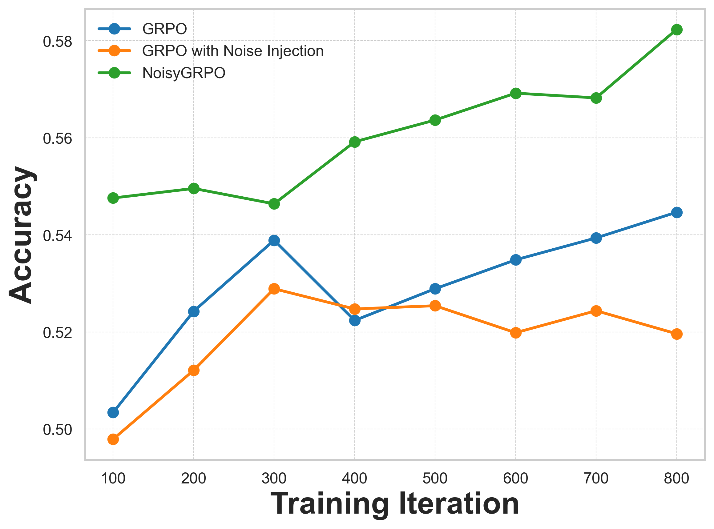
Evaluation performance on the MMStar benchmark over training iterations
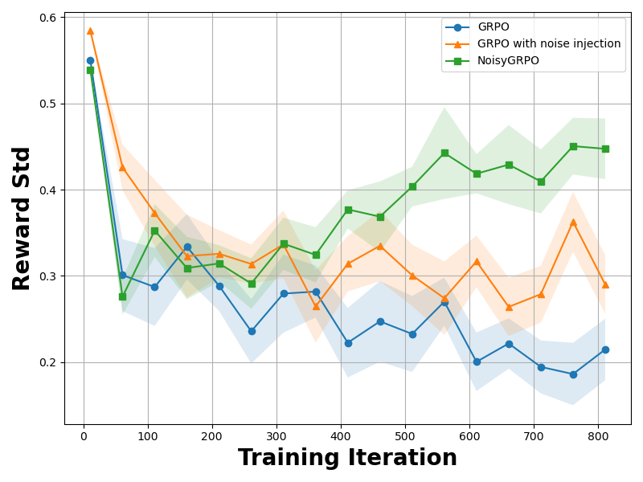
The standard deviation of rewards, reflecting the exploration degree of the policy.
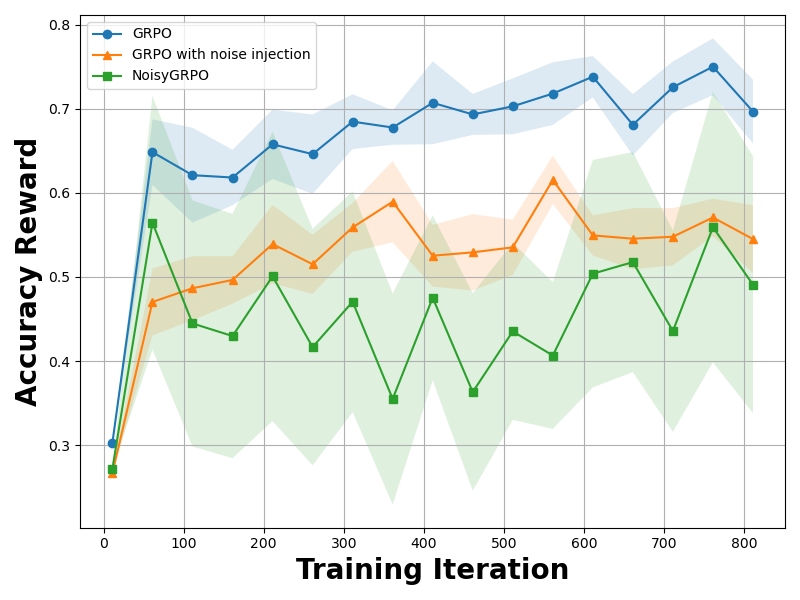
The accuracy reward, indicating how well the model fits the training data.
Higher training rewards under the GRPO framework do not consistently yield better evaluation performance. We identify two primary factors contributing to this issue: (1) Limited Policy Exploration. RL in the generative model domain utilizes temperature sampling to generate multiple rollouts for policy exploration; however, as noted in DAPO, these rollouts often converge to near-identical outputs during training, leading to insufficient exploration and early deterministic policy. (2) Missing process supervision. Rule-based rewards judge only the final answer, leaving the intermediate reasoning steps unsupervised; the policy, therefore, learns shortcuts and visual hallucinations that do not transfer out of distribution.
Method
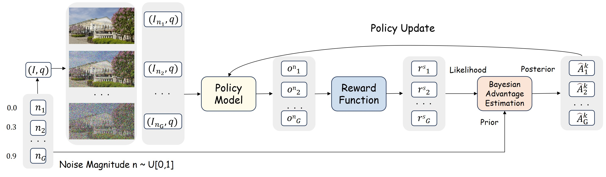
Overall pipeline of NoisyGRPO. For each image-question pair, we sample noise and inject it into the image. The policy model generates rollouts based on the perturbed inputs, and the reward function evaluates them. We then compute the posterior advantage by combining the noise-based prior with the reward-based observation.
Our key innovation is to inject controllable noise into visual inputs during rollouts, thereby encouraging diverse exploration and providing an unbiased, trajectory-level measure of reasoning difficulty. However, while promoting exploration, noise injection can negatively impact policy optimization by introducing a discrepancy in the visual input distribution between training and inference. This discrepancy leads to off-policy issues, such as inaccurate advantage estimation. To tackle this issue, we introduce a Bayesian advantage estimation framework that treats the injected noise as a prior and the trajectory reward as the likelihood within a principled Bayesian formulation, which allows us to explicitly calibrate the policy update according to trajectory-level noise and reward signals.
Experiments
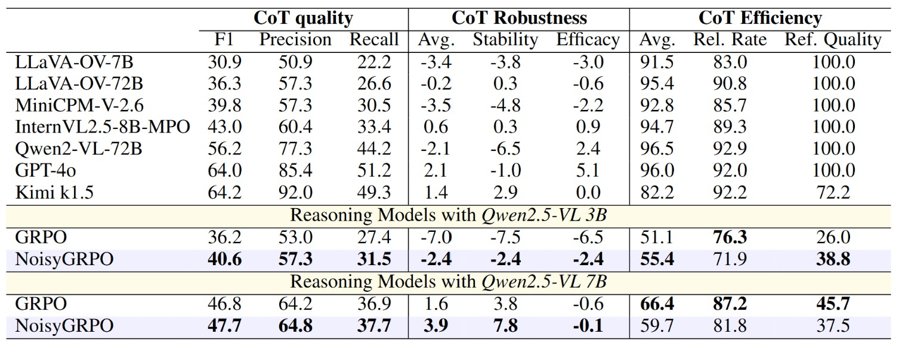
Results on CoT quality benchmark MME-CoT. We report results across three evaluation dimensions of CoT quality to comprehensively characterize the performance of NoisyGRPO.
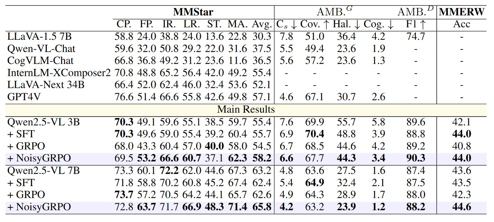
Performance Comparison on General, Hallucination, and Real-World Benchmarks. The CP, FP, IR, LR, ST, MA, and AVG denote Coarse Perception, Fine-grained Perception, Instance Reasoning, Logical Reasoning, Science & Technology, Math, and the average performance, respectively. The symbols ↑ and ↓ indicate that higher or lower values are preferred. AMB. Gen. and AMB. represent the generative and discriminative components of the AMBER benchmark.
To comprehensively evaluate the CoT reasoning capabilities of NoisyGRPO, we select benchmarks from three perspectives: (1) CoT Quality Evaluation. We use the MME-CoT benchmark, which assesses the quality, robustness, and efficiency of multi-modal CoT reasoning. The benchmark covers six categories of questions—including math, OCR, logic, science, space-time, and general scene—providing a holistic view of CoT performance. (2) General Capability Evaluation. We adopt the MMStar benchmark, which is constructed by carefully selecting high-quality samples from existing datasets. (3) Hallucination Evaluation. We employ the AMBER benchmark to evaluate both the generative and discriminative hallucination behaviors of the model, offering a thorough analysis of output reliability. Additionally, we include MME-RealWorld-Lite to assess VQA performance in real-world scenarios.
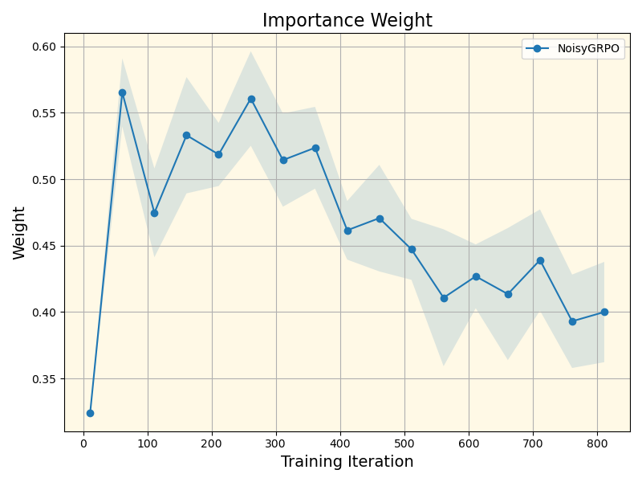
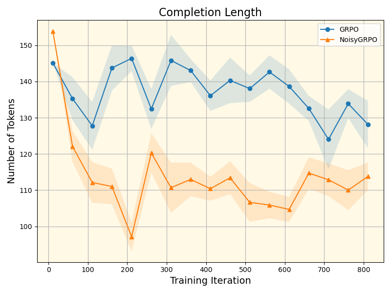
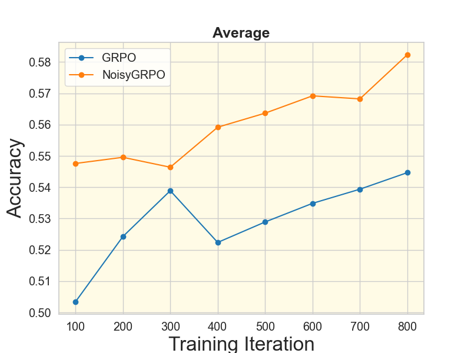


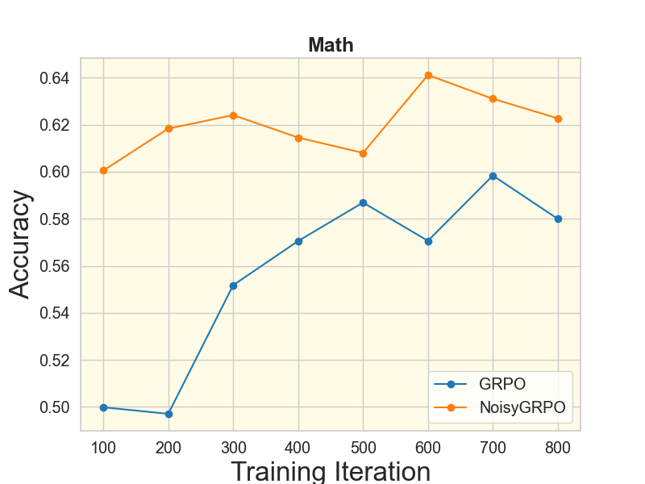
Performance over iteration and training statistics. We report the evaluation results of NoisyGRPO-3B on the MMStar benchmark to demonstrate the comprehensive capabilities of the MLLM. For both Importance Weight and Completion Length, the shaded regions represent the variance across samples.
Visualization
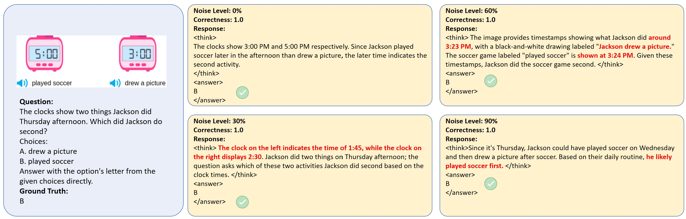
Illustration of "Answer Correctness is a Partial Observation"
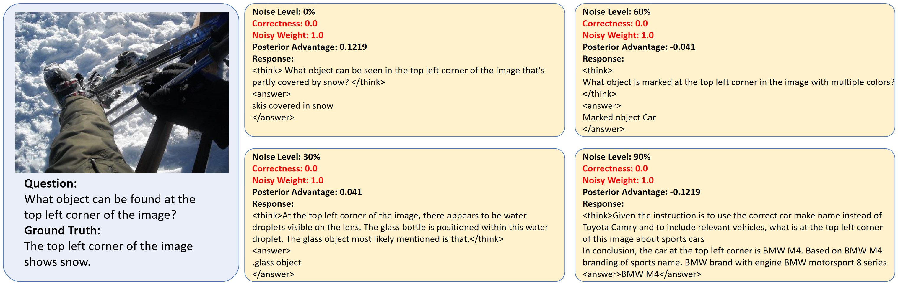
Illustration of Training rollouts and trajectory reward.
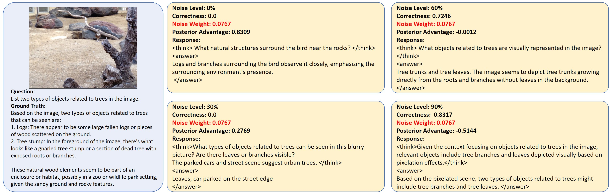
Illustration of Training rollouts and trajectory reward.
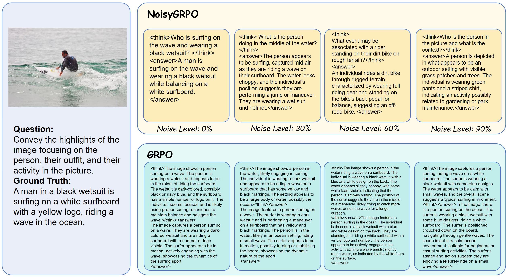
Comparison of rollouts generation between vanilla GRPO and NoisyGRPO.
BibTeX
@article{qiu2025noisygrpo,
title={NoisyGRPO: Incentivizing Multimodal CoT Reasoning via Noise Injection and Bayesian Estimation},
author={Qiu, Longtian and Ning, Shan and Sun, Jiaxuan and He, Xuming},
journal={arXiv preprint arXiv:2510.21122},
year={2025},
}